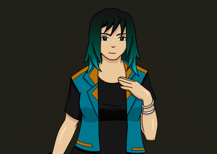

En el botón de abajo podrás entrar al canal de Youtube de Trevinoart13 para poder visualizar el proceso por el cual realiza sus dibujos.
TrevinoArt13Nosotros
En el apartado de la parte de abajo podrás darle click a las imagenes de los artistas para poder conocer un poco más de nosotros.
Ele 6ix
Ele 6ix
Soy Alexis Franco, también conocido como Ele6ix. Desde los 16 años, me metí en la música, creando canciones y produciendo beats desde los 18. Soy cantautor, productor, beatmaker y filmmaker, además de co-fundador del colectivo Sxntxs Gvng, originario de Lerma, edomx. He tenido la oportunidad de colaborar y tocar con nuevos talentos de la Ciudad de México, siendo parte de eventos que están marcando tendencia en la escena urbana de México. Mi música es una mezcla de mi vida y las vibras que rodean mi mundo.

Fortuna Kidd
Fortuna Kidd
JoyMan AKA Fortuna Kidd Soy un artista independiente que hace y disfruta de hacer música. Nací en Metepec, Estado de México en 2001 y desde entonces he residido en Toluca, llevando mi arte a las periferias del estado y en ocasiones fuera de él. Me gusta experimentar en géneros urbanos tales como Trap, Rap, R&B, Drill, Hyperpop, entre otros. Junto con mi crew “Buena Fortuna Mala Fama” llevamos más de 4 años de trayectoria empezando ya a incursionar en el mundo de la producción y máster.



Abril Torres
Abril Torres
Cantautora e integrante desde hace más de 5 años de la banda de rock alternativo Proletariado, creada en Tehuacán, Puebla. Mostrando un poco de mis versos en canciones como "ojo de perro triste" "helado corazón, "hombres malos", etc. Escribo poesía desde los 13 años, llenando un total de 4 libretas a mano y varias obras más en páginas digitales. Desde el 2022 me he introducido en la fotografía, algunas de mis imágenes se pueden ver en mi Instagram Esthert._.torres
TrevinoArt13
TrevinoArt13
Mi nombre es Natahel R. Treviño aunque mi nombre artístico es Trevinoart13, oy un ilustrador y diseñador digital, me apasiona el dibujo, el cual lo he practicado desde pequeño, aproximadamente hace dos años me adentre al mundo del dibujo digital y desde entonces hago todas mis ilustraciones de esta forma; estoy por especializarme en animación 2d de forma digital y así de esta forma poder contar historias a través de la pantalla.

Brandon Peña
Brandon Peña
AKA Brandon Peña, soy un artista enfocado a la música, escribo canciones desde trap, boom bap, hasta salsa, reggae, RnB, mis influencias musicales más fuertes son Rels B, Gera Mx, Eladio Carrion, planeo enfocar mi carrera a la producción, y todo lo relacionado con la industria musical y artística, estudiante de la licenciatura en Artes y Comunicacion Digital de la UAM Lerma, soy un raper underground que sigue en espera de su golpe de suerte.